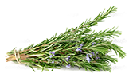

- +7 (967) 869-07-51
- Обратный звонок
Производство
Нашими основными партнёрами являются такие компании,
как Alion Frut & Veg, BLESS, Avrora, и многие другие
-
Зимний ПериодВ зимний период, в распоряжении нашей компании, находятся 2 Га собственных теплиц и 1,5 Га арендных, занятых всю зиму под посадку зеленого лука и другие зеленные культуры.
-
Летний ПериодВ летний период мы обрабатываем почти 150 Га площадей открытого грунта, занятых под посадку свежей зелени и получаем полный ассортимент зеленной продукции собственного производства.
-
ТеплицыЗакрытые теплицы, которые зимой заняты под зеленый лук, в летний период мы используем для выращивания экзотических трав таких, как базилик, руккола, мята.
-
ДоставкаОсновной наш склад базируется в Московской области, откуда мы осуществляем ежедневную доставку в Москву, Московскую область и в города, находящиеся в радиусе 500 км от Москвы.
Здоровье
Продукция
Зеленый лук
Кинза

Укроп
Базилик Зеленый

Мята
Базилик Красный
Тархун
Мелиса

Розмарин
Майоран
Лавровый Лист
Все продукты
Нам
Доверяют
Доверяют
Как мы работаем?
Закрытые теплицы, которые зимой заняты под зеленый лук,
в летний период мы используем для выращивания экзотических трав таких,
как базилик, руккола, мята.
Закрытые теплицы, которые зимой заняты под зеленый лук,
в летний период мы используем для выращивания экзотических трав таких,
как базилик, руккола, мята.
Благодарственные
Письма
Письма
7 г ± 3 г
Зеленый лук
Мы занимаемся производством отечественной зелени,
а также импортом зеленной продукции из стран СНГ из Израиля и Кипра.
-
Витамин PP
0,3 мг
-
Бэта-каротин
2 мг
-
Витамин A (РЭ)
333 мкг
-
Витамин B1 (тиамин)
0,02 мг
-
Витамин B2 (рибофлавин)
0,1 мг
-
Витамин B5 (пантотеновая)
0,06 мг
-
Витамин B6 (пиридоксин)
0,06 мг
-
Витамин B9 (фолиевая)
14 мкг
-
Витамин C
30 мг
-
Витамин E (ТЭ)
1 мг
-
Витамин H (биотин)
0,9 мкг
-
Витамин К (филлохинон)
166,9 мкг